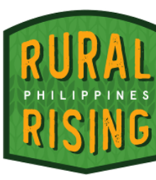
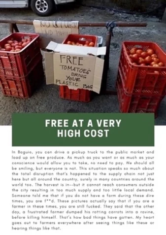
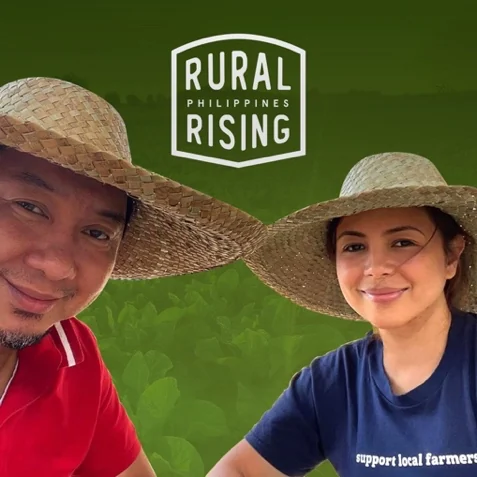
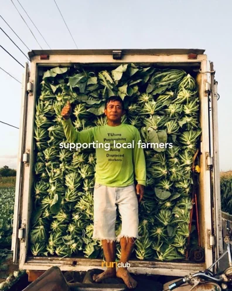

Company Rescue Buy™
Produce rescued and distributed to employees.

Rural Rising Philippines Get in touchA farmer-first movement, since 2020
What started with one viral post became a community helping Filipino farmers put good food on more tables.
01 / THE STORY
Rural Rising Philippines (RuRi) is an organic, grassroots effort to help distressed Filipino farmers get back on their feet so they can once again feed the nation with pride.
It began in 2020, when an online post about produce being given away for free at the Baguio City public market went viral. Through Rescue Buy™, RuRi buys surplus produce at twice the farmgate price and distributes it to consumers at half the supermarket price. Unclaimed produce goes to hungry urban communities, animal rescue shelters, and the DSWD Walang Gutom Kitchen.
The conversations and stories at RuRi are led and written by spouses Ace and Andie Estrada.
THE COMMUNITY BEHIND THE WORK
Figures shared in “The Accidental Advocacy of Rural Rising Ph,” alongside 50,000 Facebook group members, 315,000 Facebook followers and 15,000 Viber subscribers.
02 / WAYS WE WORK
Programs for companies, employees, communities and people who want to help.
Produce rescued and distributed to employees.
A pop-up farmer’s market at the office.
Bagged fresh produce delivered to the office every month.
Fruits and vegetables, and an exciting game of helping.
RuRi’s online store.
RuRi’s forest, water and eagle conservation project.
Food donations to hungry communities and community pantries.
A partnership supporting the Walang Gutom Kitchen.
THE PEOPLE & THE PRODUCE



03 / THE STORY TRAVELS
Watch the broadcast features here, or visit their original videos.
IN PRINT & ONLINE
Features and stories from publications and partner organizations.
04 / RECOGNITION
RuRi is a Validated Organization of the global grant-making organization Charities Aid Foundation (CAF) America.
View the blockchain credential ↗05 / THE SOUND OF RURI
Press play and listen without leaving the page.
BE PART OF THE STORY
RuRi welcomes opportunities to work with companies and organizations, invitations to deliver the talk “The Accidental Advocacy of Rural Rising Ph,” and service learning and team-building camps at Camp Mingan.
Donations help acquire post-harvest processing equipment, conduct farmer trainings, and build vegetable tramlines or foot bridges.
Start a conversationGCash 0917 501 7787 · Armando II
Asian United Bank SA # 545-11-000128-5 · Rural Rising Philippines
RURAL RISING VIDEO